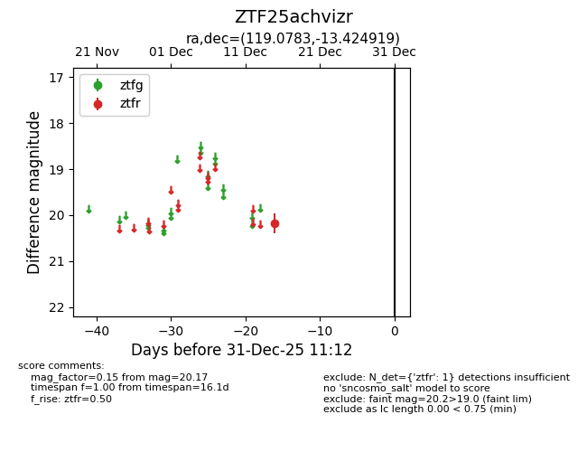
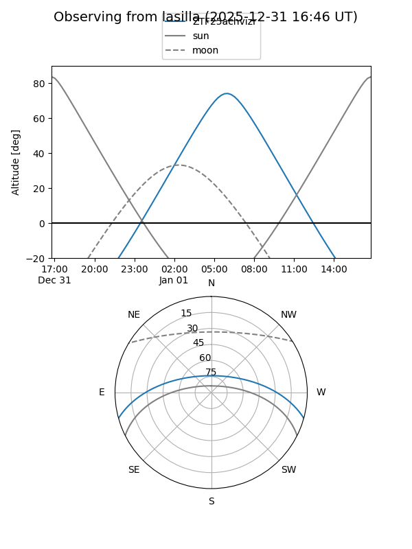

ZTF25achvizr
Target ZTF25achvizr at 2025-12-31 16:59
Aliases and brokers:
FINK:
Lasair:
ALeRCE:
alt names
ZTF25achvizr (ztf,fink_ztf)
Coordinates:
equatorial (ra, dec) = 119.0783,-13.42492
equatorial (HMS+DMS) = 07:56:18.79,-13:25:29.71
galactic (l, b) = (232.4196,+7.81187)
Flags:
Photometry:
last ztfr=20.17
1 ztfr detections
Lightcurve

Visibility


Additional plots